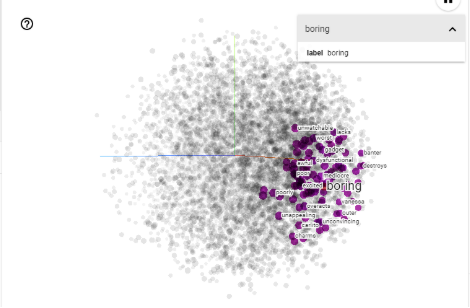
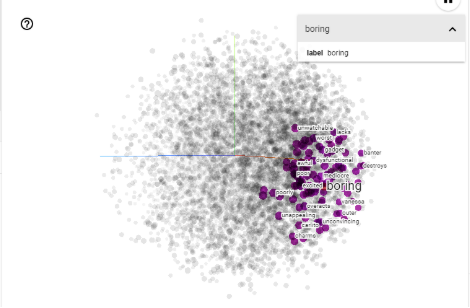
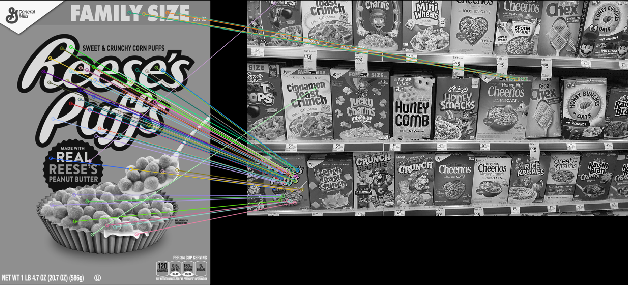
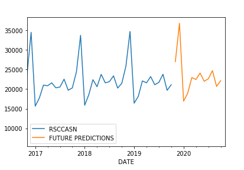
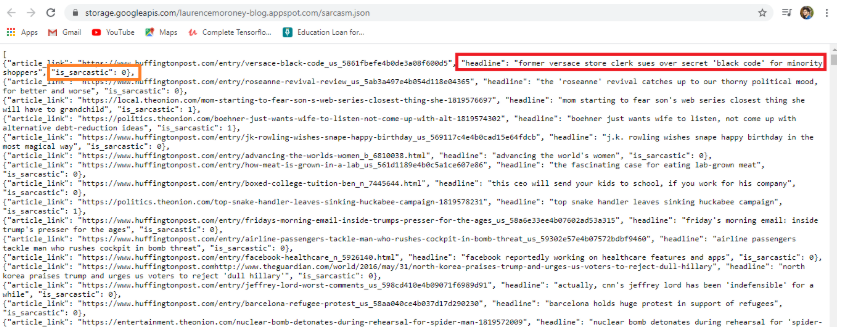
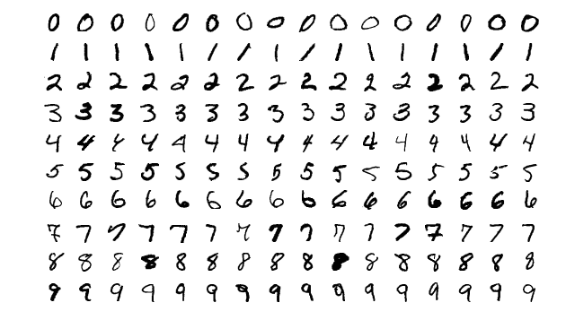
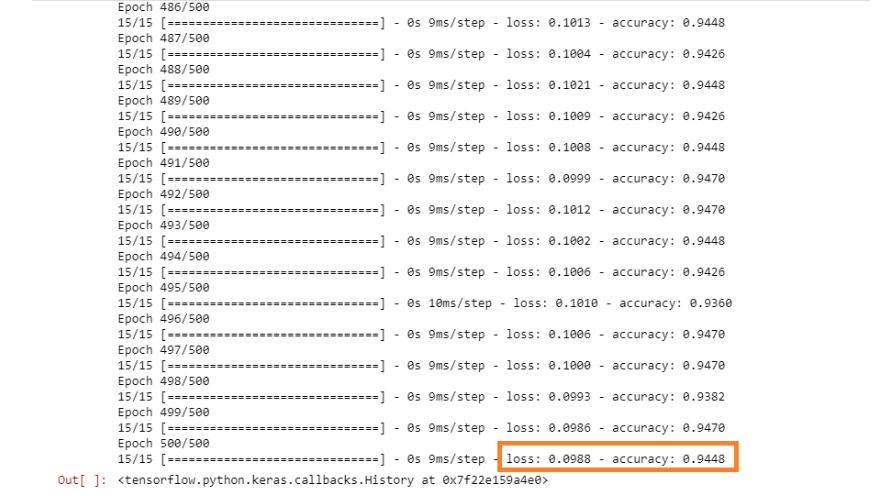

My interest in the field of Artificial Intelligence was provoked ever since I heard about the term AI and the milestones we may be able to reach through it in the upcoming future.It was then,I knew which profession I had to get into.So,after securing a seat for Btech in Computer Science in the most recognized government college of Telangana,I started researching more and more about the field and its capabilities.Knowing that AI could shape our future,I started doing several online courses on various platforms to gain expertise in AI,particularly Deep Learning.Below are some of my projects(all other projects are on my Github profile).
 

In this project,sentiment analysis is done on an imdb reviews dataset.The intention is to determine whether the review given by the person is a positive one or negative

The features from the image containing just a cereal box is taken and then matched with an image containing mutiple cereal boxes of different brands and obviously different looks.

There are two seperate projects in which dense neural network models are created to predict the sales in the future and given some dimensions of a gem ,prediction of its price in the market.

In this project, a model is created which determines whether the given text is sarcastic or not.The dataset contains various headlines with its respective labels ,i.e,sarcastic or not sarcastic.

Using the MNIST dataset,I created a model which determines ,from a given image,which handwritten digit is it (0 to 9) with a great prediction accuracy.

In this project,using a small peotry dataset made by one of the teachers on Coursera ,I created a model which would write peotry as given some text,it would predict new text